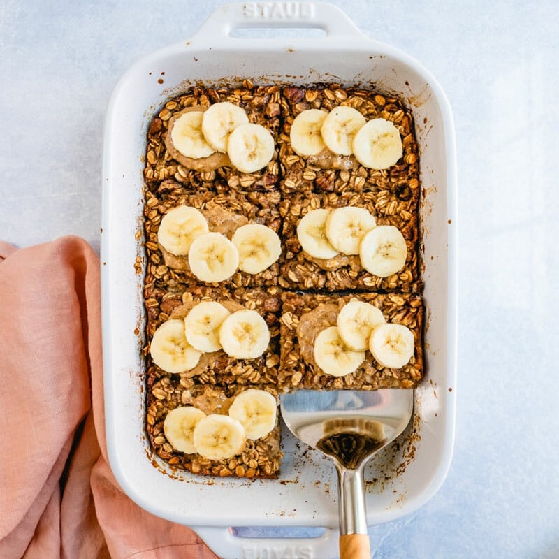
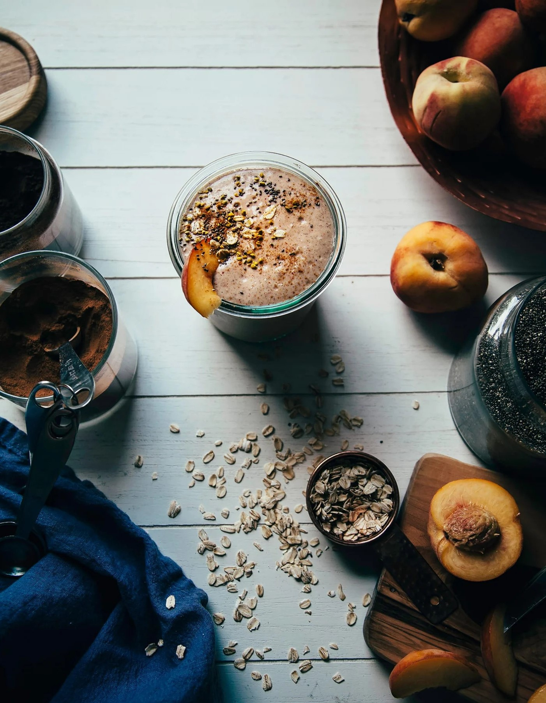

Recipe Book: Morning Feasts
Simple, Delicious Mornings
About:
Finding Recipes for a breakfast menu!
This is the
recipe book is a collection of delightful morning recipes gathered from
renowned chefs and kitchen masters, all in one place. It's like a
breakfast buffet with flavors from around the world. Scrolling through
this recipe book, and you'll find Simple yet amazing recipes. Whether
you're a cooking pro or beginners, this book is for you to get a breakfast
recipe full of yumminess and fun!
Famous Cheif Julia child once said:Cooking well doesn`t mean, Cooking fancy
Break Fast Meals (Content):
- Vegan (2):
- Banana Baked Oatmeal ------------- pg: 1
- Peach Crumble Shake --------------- pg: 2
-
Non-Vegan (4):
- Creamy Scrambled Eggs ------------ pg: 3
- Green-herb Masala Paratha --------- pg: 4
- Sweet Cream Pancakes -------------- pg: 5
- Halwa Poori & Chanay -------------- pg: 6
Vegan Meal: Banana Baked Oatmeal

Prep Time: 15 minutes
Cook Time: 45 minutes
Chief: Sonja & Alex
Banana baked oatmeal! This incredible recipe is wholesome
and filling, and it`s made with good-for-you ingredients mostly oats and
bananas.A baked oatmeal recipe calls for egg to help bind together the
texture. But when you use mashed bananas, they act as a binder!
Ingredients:
-
2 Cups rolled Oats: Do not substitute steel cut oats, as they have a
much different texture!
- 1/2 Cup Nuts: (Optional)
- Pecan pieces
- Walnut
- Almonds
- 1 teaspoon baking powder
- 1 1/2 teaspoons Cinnamon
- 1 tablespoon Vanila extract
- 1/2 teaspoon Allspice
-
1/2 teaspoon kosher salt
- 1 3/4 Cups of Milk
- Oat Milk
- Almond Milk
- Dairy Milk
- Maple syrup
-
3/4 Cup mashed banana or 2 Ripe Bananas: Make sure
they are very ripe! It is crucial for this recipe.
- For Serving:
Instructions:
- Preheat the oven to 375 degrees Fahrenheit.
-
Grease an 8 x 8″ or 9 x 9″ pan with coconut oil or a
neutral oil.
In a medium bowl, mix together the rolled oats, pecan pieces, baking
powder, cinnamon, allspice, and kosher salt.
- Dump the dries into the prepared pan.
-
Mash the bananas. In the same bowl, whisk together the bananas, milk,
maple syrup, and vanilla. Drizzle the milk mixture over the oats. Stir
lightly with a fork to make everything gets evenly incorporated.
-
Bake 40 to 45 minutes until the top is nicely golden and the oat mixture
has set. Remove from the oven and allow to cool for at least 10 minutes
(or more for the texture to fully set).
-
Before serving, spread the top with almond butter or peanut butter (or a
combination) and top with banana slices. Store leftovers refrigerated
for up to 1 week: reheat in a 300 degree oven or microwave until warm.
For more details about this recipe
Read this blog.
Pg: 1
Vegan Meal : Peach Crumble Shake

Prep Time: 5 minutes
Total Time: 5 minutes
Cheif: Laura Wright
The Vegan Peach Crumble shake is a refreshing and filling summer
breakfast with oats, baking spices, fresh and frozen peaches and nut milk.
Ingredients:
- 2 ripe Peaches: Pitted, sliced and frozen
- 1/4 cup rolled oats
- 1 pitted Medjool date
- 1 tablespoon chia seeds
- 1 tablespoon almond butter
- Big squeeze of fresh lemon juice
- 3/4 teaspoon ground cinnamon
- 1/2 teaspoon vanilla extract
-
1 scoop vanilla protein powder(Optional)
-
1 cup non-dairy milk
- 1/2 cup filtered water
Instructions:
-
In an upright blender,
combine the frozen peaches, oats, date, chia seeds, almond butter, lemon
juice, cinnamon, vanilla, protein powder (if using) non-dairy milk, and
water.
-
Blend on high until thoroughly combined and frothy. It`ll be super
thick! Enjoy immediately.
For more details about this recipe
Read this blog.
Pg: 2
Premium Version
To Read the full Morning Feast Book.You can buy book from your near
by store and E-book through email.You can get 50% Discount to buy E-book.
Price (On store): 1000pkr
Price (E-book): 1000pkr Discount 500pkr
Detail about the author:
Contact me: Email